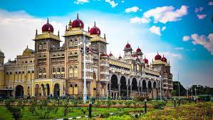
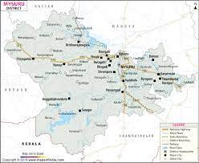

Visit palace
The Mysore Palace, officially known as Mysuru Palace, is a historical palace and the royal residence (house) at Mysore in the Indian state of Karnataka.
It is the official residence of the Wadiyar dynasty and the seat of the Kingdom of Mysore.The palace is in the centre of Mysore, and faces the Chamundi Hills eastward. Mysore is commonly described as the 'City of Palaces', and there are seven



Location Or Map

Bus route
Mysore Bus Stand Contact Address, Phone Number, Email Id details. Mysore Bus Stand is an Indian largest and popular bus terminal located in Mysore, India. Many Indian’s looking for the contact information of the terminal for complaint, booking or refund related queries. Right Now, we sharing details of Mysore Bus Stand all India numbers, call centre number, refund contact number & enquiry contact numbers that can help you to get connected with the support team.